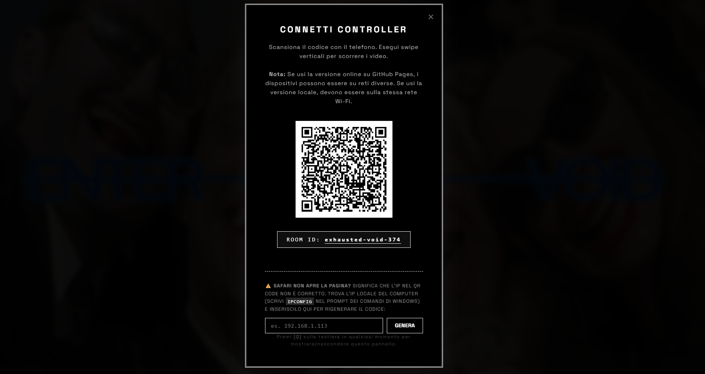
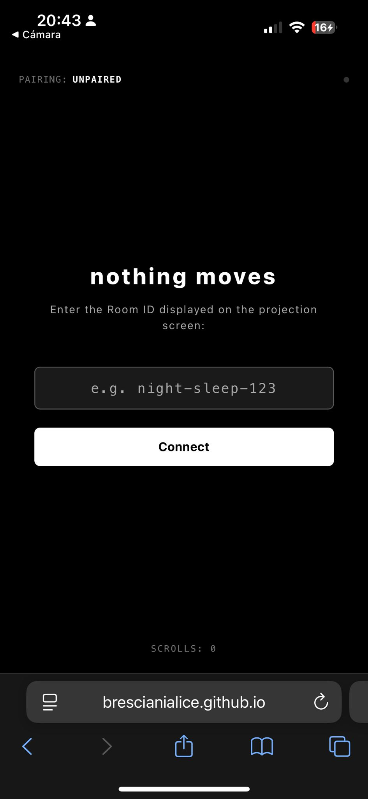

Fragilità e ambiente estremo.
«La fragilità, cioè la propensione a rompersi, è diversa dalla mancanza di forza, la debolezza.»
Un contesto nel quale le fragilità di una persona o di un gruppo di persone vengono esasperate, può essere considerato un ambiente estremo. Il nostro presente digitale, vissuto nello spazio isolato delle ore notturne, rappresenta esattamente questo genere di ambiente.
L'opera esplora il tema del doom scrolling: la fragilità del corpo che si arrende. Il corpo che si abbandona allo scorrimento compulsivo dello schermo, spesso di notte, spesso di fronte a contenuti che fanno male ma da cui non ci si riesce a staccare.
Il progetto non parla del doom scrolling in sé, ma di quel momento prima della soglia, lo stato liminale in cui il corpo è ancora sveglio ma la mente è già altrove. Lo schermo dello smartphone, in questa penombra sospesa, cessa di essere un mero strumento e diventa quasi un oggetto transizionale, analogo al peluche del bambino: un appiglio fisico che media l'angoscia del vuoto prima del sonno.
L'Architettura di Sistema
L'installazione si fonda su una relazione asimmetrica tra due dispositivi collegati tramite il
protocollo MQTT (WebSockets). Sotto, puoi sperimentare l'interazione tra la
Proiezione (lo schermo condiviso che satura lo spazio) e il
Controller (il tuo smartphone, qui simulato).
Trascina il pollice verso l'alto (swipe up) sul Controller simulato per avanzare nel feed
della Proiezione.
La Timeline Narrativa
Il feed dell'installazione non è casuale: è strutturato su una timeline rigida che si sviluppa e si degrada progressivamente man mano che l'utente compie i 26 swipe a sua disposizione.
Il Doom Scrolling Notturno
Una sequenza sequenziale di 23 video locali (nominati come file esportati direttamente da chat WhatsApp) viene proiettata a ritmo incalzante. Le immagini scorrono freneticamente, intervallate da scritte spettrali in sovrimpressione che riecheggiano l'alienazione dello schermo ("you are still awake", "just one more swipe", "scrolling is an illusion").
.jpg)
Il Corpo Svuotato
Allo scoccare del 24esimo scroll, i video spariscono bruscamente dalla proiezione. Lo schermo diventa una distesa nera, ospitando esclusivamente scritte minimali che invitano lo spettatore a fermare l'interazione ed abitare il silenzio ("battery depleted", "body depleted", "there is no next video").
.jpg)
Il Drift / L'Abbandono
Raggiunto il limite invalicabile di 26 scroll, l'installazione si scollega deliberatamente dall'input del controller mobile. Il sistema si appropria del controllo, avviando un fade-out automatico di 9 secondi verso il buio e il silenzio assoluto. Lo spettatore viene lasciato dinanzi al vuoto. Solo dopo questo tempo, la stanza si resetta per l'utente successivo.
 Legatoria fisica del progetto
Legatoria fisica del progetto

Proiezione e pannellaturaComparto Sonoro Procedurale
«Il suono deve attirare a guardare su. Uno sciame caotico e saturo che mima il collasso fisico.»
Accavallamento Infinito (Audio Stacking)
A livello acustico, l'avanzamento tra i video non interrompe la sorgente precedente. Quando l'utente esegue uno swipe, il video appena passato non si ferma, ma rimane attivo in background con un volume ridotto (0.32). Man mano che si procede, i canali audio si sommano l'uno sull'altro creando una stratificazione cacofonica ed estremamente alienante.
Degradazione Progressiva
Più l'utente procede lungo la timeline degli scroll, più i parametri del drone sonoro cambiano in tempo reale: la tonalità si fa cupa, il volume del respiro aumenta e la frequenza dell'oscillatore LFO rallenta gradualmente fino a toccare i 0.09 Hz, simulando plasticamente il rallentamento del battito cardiaco e l'esaurimento delle energie del corpo.
Architettura del Controller
Il modulo mobile trasforma lo smartphone in uno strumento intimo e tattile, focalizzato esclusivamente sul gesto meccanico dello swipe.
Parsing dei Gesti ed Empatia d'Interfaccia
Il sistema rileva il delta verticale (ΔY) del tocco. Uno swipe verso l'alto invia via MQTT il
segnale di avanzamento. Ad ogni interazione, viene generata un'onda concentrica (ripple) sullo
schermo e viene attivata la vibrazione fisica del telefono (navigator.vibrate(15))
per restituire un feedback aptico continuo.
I Sussurri Poetici (Pensieri della Stanza)
Mentre lo spettatore interagisce nel buio, il controller visualizza frasi fluttuanti a bassissimo contrasto, che compaiono ogni 16 secondi o con il 20% di probabilità ad ogni swipe. Sono pensieri disillusi ed intimi legati alla stanchezza notturna.
Il Blocco Finale
Al ventiseiesimo scroll, il controller si blocca in uno stato terminale
(final-state). Le funzionalità di swipe e i sussurri poetici vengono rimossi,
mostrando a schermo la frase definitiva: "nothing moves until you do". Dopo 10
secondi, la pagina esegue un refresh automatico per riavviare il loop espositivo.

Dettaglio interfaccia fisica su supporto mobileI Sussurri della Stanza
« all'impero del sonno preferisco l'impero del male »
« questo mondo si è addormentato »
« scorrere non riempie il vuoto »
« solo un altro scroll e poi dormo »
« la mente è altrove, il corpo si arrende »
NOTHING MOVES UNTIL YOU DO
Il Codice dell'Opera: Vibe Coding
Il software dell'installazione non è solo infrastruttura, ma parte integrante dell'esperienza estetica. Di seguito vengono analizzati i tre pilastri logici dell'opera, scritti in modalità vibe coding (collaborazione espressiva uomo-macchina).
Accumulazione Sonora (Audio Stacking)
Il motore acustico basato su Web Audio API gestisce la sovrapposizione dinamica dei canali audio. Ad ogni swipe, il video in riproduzione guadagna il volume massimo, mentre i flussi precedenti non si interrompono ma degradano al 30% del volume, stratificandosi in un drone cacofonico ed alienante. Al raggiungimento del quinto scroll, tutti i canali salgono simultaneamente al 70% per simulare la saturazione sensoriale definitiva.
function handleAudioTrigger(idx) {
if (!audioCtx || idx <= maxIndexReached) return;
maxIndexReached = idx;
const now = audioCtx.currentTime;
const rampTime = 1.5;
if (idx === 4) { // Video 5 (0-indexed)
for (let i = 0; i <= idx; i++) {
if (gainNodes[i]) gainNodes[i].gain.setTargetAtTime(0.7, now, rampTime);
}
} else {
if (gainNodes[idx]) gainNodes[idx].gain.setTargetAtTime(1.0, now, rampTime);
for (let i = 0; i < idx; i++) {
if (gainNodes[i]) gainNodes[i].gain.setTargetAtTime(0.3, now, rampTime);
}
}
}Lo Stato Liminale (Velocity Detection)
Il loop principale analizza in tempo reale la velocità dello scroll dell'utente calcolando il delta di spostamento verticale pixel/tempo. Se lo scroll rallenta scendendo sotto la soglia critica di 10 pixel al secondo, l'installazione rileva uno stato liminale del corpo (la sonnolenza o l'inerzia notturna) e dissolve l'interfaccia in un filtro grayscale a luminosità dimezzata, rappresentando visivamente l'abbandono fisico e lo spegnimento della mente.
function updateLoop(timestamp) {
const currentScrollY = window.scrollY;
const deltaTime = timestamp - lastTimestamp;
const deltaScroll = Math.abs(currentScrollY - lastScrollY);
if (deltaTime > 0) {
currentVelocity = (deltaScroll / deltaTime) * 1000;
}
// Stato Liminale: Grayscale & Brightness
if (currentVelocity < 10 && currentScrollY > 10) {
container.style.filter = 'grayscale(1) brightness(0.5)';
} else {
container.style.filter = 'grayscale(0) brightness(1)';
}
lastScrollY = currentScrollY;
lastTimestamp = timestamp;
}Dislocazione Hard Datamosh
L'avanzamento compulsivo della pagina applica un filtro di distorsione distruttiva (displacement map) basato su un filtro SVG vettoriale. La coordinazione geometrica deforma l'immagine con scale di displacement fino a 500 unità, abbinate a rotazioni di colore (hue-rotate) e jittering geometrico randomico ad ogni fotogramma. Maggiore è lo scroll cumulativo, maggiore è la disintegrazione del feed WhatsApp, mimando il sovraccarico digitale.
// Modulazione intensiva del filtro SVG
const moshScale = scrollProgress * 500;
hardMap.setAttribute('scale', moshScale);
// Cromaticità e Jitter geometrico
videoElements.forEach((v, index) => {
const combinedProgress = (scrollProgress * 0.6) + (videoFactor * 0.4);
const skewVal = combinedProgress * 20;
const scaleVal = 1 + (combinedProgress * 0.3);
const hueVal = combinedProgress * 360;
v.style.transform = `skewX(${skewVal}deg) scale(${scaleVal})`;
v.style.filter = `url(#datamosh-hard) hue-rotate(${hueVal}deg)`;
});Sincronizzazione Remota (MQTT over WebSockets)
Nel file controller.js dell'esame del secondo anno, lo
smartphone si connette al broker MQTT pubblico. Genera un identificativo univoco
(clientId) e si iscrive a un canale specifico basato sul codice stanza. Ogni
volta che l'utente effettua uno swipe, lo smartphone invia istantaneamente un pacchetto dati
(JSON) che dice alla proiezione di avanzare nei video, garantendo una reattività immediata
senza server locali complessi.
function connectMQTT() {
roomTag.textContent = roomCode;
const clientId = "nm_ctrl_" + Math.random().toString(16).substring(2, 8);
client = mqtt.connect("wss://broker.emqx.io:8084/mqtt", {
clientId: clientId,
clean: true
});
client.on("connect", () => {
isConnected = true;
connDot.className = "conn-dot connected";
// Invia notifica di accoppiamento riuscito
const topic = "nothingmoves/room/" + roomCode + "/control";
client.publish(topic, JSON.stringify({ action: "pair_success", timestamp: Date.now() }));
});
}Sintesi Sonora Binaurale e Respiro Procedurale
Nel file projection.js, l'audio non è registrato, ma
sintetizzato matematicamente. Vengono creati due oscillatori sinusoidali a frequenze
vicinissime (55.0 Hz e 55.4 Hz). La minima differenza
genera un "battito binaurale" a 0.4 Hz, una frequenza che induce rilassamento cerebrale
(onde delta). Contemporaneamente, un generatore di rumore bianco filtrato viene modulato da
un oscillatore LFO a 0.15 Hz, ricreando il suono del respiro umano a riposo.
function initWebAudio() {
audioCtx = new AudioContext();
mainGain = audioCtx.createGain();
// Battito Binaurale Delta (55.0Hz / 55.4Hz)
const osc1 = audioCtx.createOscillator();
osc1.frequency.setValueAtTime(55.0, audioCtx.currentTime);
const osc2 = audioCtx.createOscillator();
osc2.frequency.setValueAtTime(55.4, audioCtx.currentTime);
// Respiro LFO (Modulazione a 0.15Hz = 9 respiri/min)
lfoNode = audioCtx.createOscillator();
lfoNode.frequency.setValueAtTime(0.15, audioCtx.currentTime);
// Connessioni ed esecuzione
osc1.connect(mainGain);
osc2.connect(mainGain);
osc1.start();
osc2.start();
}